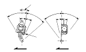

Inspección de los cinturones de seguridad
|
Para el retractor del cinturón de seguridad delantero con tensor de dicho cinturón,
revise la situación de los componentes del SRS
y
las notas de precaución y los procedimientos
antes de efectuar ninguna labor de reparación o mantenimiento.
Retractor delantero y trasero
|
Parte delantera

Traseras

|